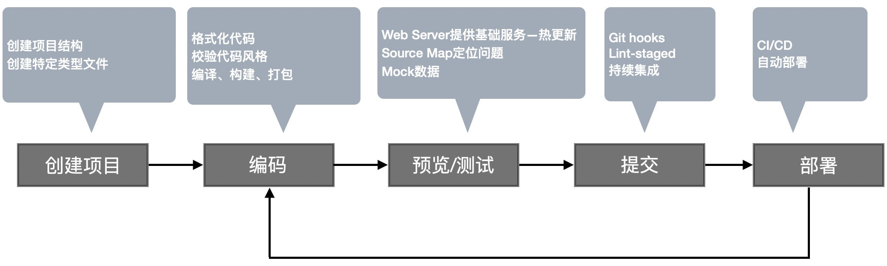

前端工程化指遵循一定标准和规范，通过工具去提高效率、降低成本的一种手段。
近些年一直被广泛关注和探讨，究其原因主要是因为对前端应用功能要求不断提高，业务逻辑日益复杂。
从传统的网站，到现在的H5，移动应用，桌面应用，小程序等，前端技术设计的开发应用增多，同时，这对前端开发者的要求也同样增高了。
技术是为了解决问题而存在的，前端工程化前，前端开发面临着许多问题，像：
- 想使用ECMAScript的新特性来提高编码效率，但是实际开发中发现，兼容性有问题。
- 想使用Less，Sass，PostCSS来提高css的编程性，但是运行环境不能直接使用。
- 想要使用模块化的方式提高项目的可维护性，但是运行环境不能直接支持。
- 部署上线前需要手动压缩代码及资源文件，部署过程需要手动上传代码到服务器。
- 多人协同开发时，无法硬性要求统一的代码风格，无法保证所有人的代码质量。
- 部分开发功能需要等待后端的接口服务
前端工程化主要解决的问题：
- 传统语言或语法带来的弊端
- 无法使用模块化、组件化去组织我们的代码
- 重复的机械式工作
- 代码风格无法统一、代码质量无法保证
- 依赖后端接口服务
- 整体依赖后端项目
工程化表现
一切以提高效率、降低成本、保证质量为目的手段都属于工程化
一切复杂的工作都应该被自动化

开发流程中的自动化体现
工程化 ≠ 某个工具
工程化是对整体的规划和架构，工具只是为了更好的实现我们的规划和架构的一种手段。
落实工程化的第一件事应该是规划一个项目整体的工作流架构。
像是文件的组织结构、源代码的开发范式、用什么方式做前后端分离等。
有了规划之后，再考虑应该搭配哪些具体的工具，做哪些配置选项去实现我们的工程化整体的规划。